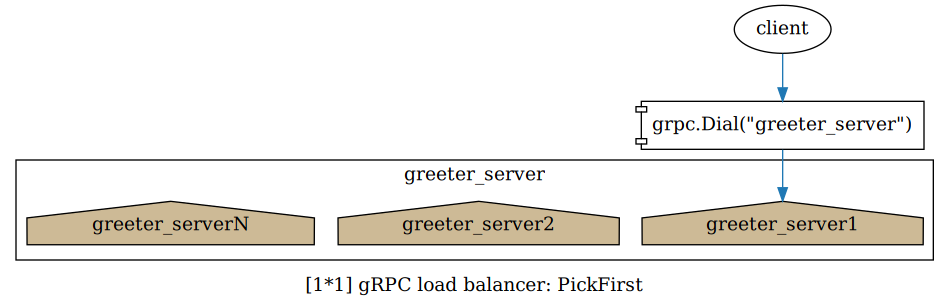
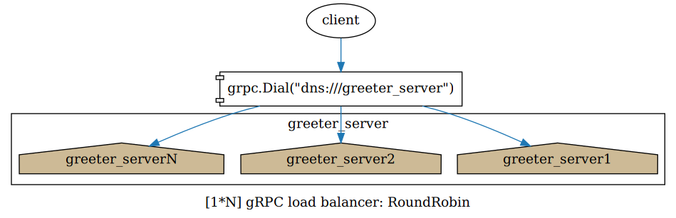
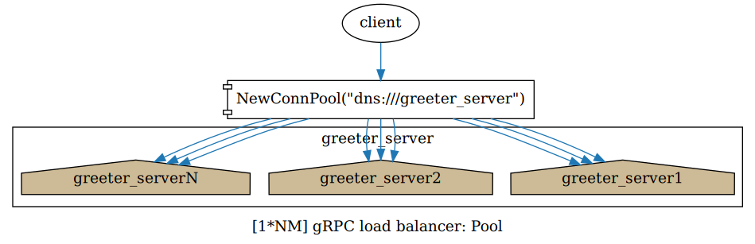

服务器端负载均衡选项： MaxConnectionAge
默认情况下，gRPC 客户端与服务器间存在一条 HTTP/2 长连接，当服务器端添加了新结点时，客户端是无感知的，新上线的结点将不会有请求进来。 MaxConnectionAge 指定长连接的存活时间，当客户端检测到 gRPC 长连接断开时，会解析服务器域名，重新建立连接，从而为负载均衡提供了基础。
import "google.golang.org/grpc" import "google.golang.org/grpc/keepalive" server = grpc.NewServer( grpc.KeepaliveParams(keepalive.ServerParameters{MaxConnectionAge: 2 * time.Minute}), )
客户端负载均衡器： Pick First
适用于终端用户与服务间通信，由于存在大量终端用户，服务器端的负载均衡不成问题。

Pick First 是 golang gRPC 默认的负载均衡器，采用 "一服务一连接" 模型，客户端与服务间只有一条长连接。
它从服务器域名解析出 IP 列表后，依次尝试建立一条长连接，直到成功为止，当长连接断开时，重复以上过程。
客户端通过 服务器域名 建立 gRPC 连接来启用 Pick First 负载均衡器。
import "google.golang.org/grpc" import pb "google.golang.org/grpc/examples/helloworld/helloworld" conn, err := grpc.Dial( "greeter_server", grpc.WithInsecure(), ) c := pb.NewGreeterClient(conn)
客户端负载均衡器： Round Robin
适用于内部服务间通信，在 K8S 中配合 Headless Services 非常容易部署。

Round Robin 是 golang gRPC 内置支持的负载均衡器，采用 "一服务器 IP 一连接" 模型，客户端与服务器的每一个 IP 间都有一条长连接。
它从服务器域名解析出 IP 列表后，对每一个 IP 确保存在一条长连接，当有长连接断开时，重复以上过程。
客户端通过 "dns:///服务器域名" 建立 gRPC 连接并指定 "roundrobin" 启用 Round Robin 负载均衡器。
import "google.golang.org/grpc" import "google.golang.org/grpc/balancer/roundrobin" import pb "google.golang.org/grpc/examples/helloworld/helloworld" conn, err := grpc.Dial( "dns:///greeter_server", grpc.WithInsecure(), grpc.WithBalancerName(roundrobin.Name), ) c := pb.NewGreeterClient(conn)
客户端负载均衡器： Pool
适用于外部服务间通信，在 K8S 中以 SLB 方式暴露的服务对外表现为一个 IP，此时采用连接池可以确保负载均衡。

最新的 go-grpc 库（v1.28+）提供了 ClientConnInterface 接口，通过该接口可以很方便地实现 gRPC 连接池，参考 googleapis 。
采用 "一服务器 IP N 连接" 模型，客户端与服务器的每一个 IP 间都有 N 条长连接，各连接间的负载均衡采用 Round Robin 算法。
它从服务器域名解析出 IP 列表后，对每一个 IP 确保存在 N 条长连接，当有长连接断开时，重复以上过程。
conn_pool.go
package main import ( "sync/atomic" "golang.org/x/net/context" "google.golang.org/grpc" "google.golang.org/grpc/balancer/roundrobin" ) type ConnPool struct { conns []*grpc.ClientConn idx uint32 } func (p *ConnPool) Num() int { return len(p.conns) } func (p *ConnPool) Conn() *grpc.ClientConn { i := atomic.AddUint32(&p.idx, 1) return p.conns[i%uint32(len(p.conns))] } func (p *ConnPool) Close() error { var firstError error for _, conn := range p.conns { if err := conn.Close(); err != nil { if firstError != nil { firstError = err } } } return firstError } func (p *ConnPool) Invoke(ctx context.Context, method string, args interface{}, reply interface{}, opts ...grpc.CallOption) error { return p.Conn().Invoke(ctx, method, args, reply, opts...) } func (p *ConnPool) NewStream(ctx context.Context, desc *grpc.StreamDesc, method string, opts ...grpc.CallOption) (grpc.ClientStream, error) { return p.Conn().NewStream(ctx, desc, method, opts...) } func NewConnPool(ctx context.Context, address string, poolSize int) (*ConnPool, error) { pool := &ConnPool{} for i := 0; i < poolSize; i++ { conn, err := grpc.Dial( address, grpc.WithInsecure(), grpc.WithBalancerName(roundrobin.Name), ) if err != nil { defer pool.Close() // NOTE: error from Close is ignored. return nil, err } pool.conns = append(pool.conns, conn) } return pool, nil }
使用连接池
import "golang.org/x/net/context" import pb "google.golang.org/grpc/examples/helloworld/helloworld" conn, err := NewConnPool( context.Background(), "dns:///greeter_server", 10, ) c := pb.NewGreeterClient(conn)